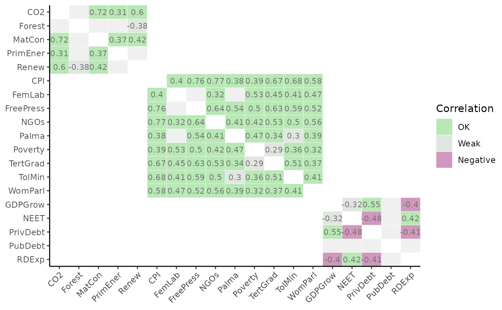

Generates heatmaps of correlation matrices using ggplot2, which can be tailored according to the grouping and structure
of the index. This enables correlating any set of indicators against any other,
and supports calling named aggregation groups of indicators. The withparent argument generates tables of correlations only with
parents of each indicator. Also supports discrete colour maps using flagcolours, different types of correlation, and groups
plots by higher aggregation levels.
Usage
plot_corr(
coin,
dset,
iCodes = NULL,
Levels = 1,
...,
cortype = "pearson",
withparent = FALSE,
grouplev = NULL,
box_level = NULL,
showvals = TRUE,
flagcolours = FALSE,
flagthresh = NULL,
pval = 0.05,
insig_colour = "#F0F0F0",
text_colour = NULL,
discrete_colours = NULL,
box_colour = NULL,
order_as = NULL,
use_directions = FALSE
)Arguments
- coin
The coin object
- dset
The target data set.
- iCodes
An optional list of character vectors where the first entry specifies the indicator/aggregate codes to correlate against the second entry (also a specification of indicator/aggregate codes)
- Levels
The aggregation levels to take the two groups of indicators from. See
get_data()for details.- ...
Optional further arguments to pass to
get_data().- cortype
The type of correlation to calculate, either
"pearson","spearman", or"kendall"(seestats::cor()).- withparent
If
aglev[1] != aglev[2], and equalTRUEwill only plot correlations of each row with its parent. If"family", plots the lowest aggregation level inLevelsagainst all its parent levels. IfFALSEplots the full correlation matrix (default).- grouplev
The aggregation level to group correlations by if
aglev[1] == aglev[2]. By default, groups correlations into the aggregation level above. Set to 0 to disable grouping and plot the full matrix.- box_level
The aggregation level to draw boxes around if
aglev[1] == aglev[2].- showvals
If
TRUE, shows correlation values. IfFALSE, no values shown.- flagcolours
If
TRUE, uses discrete colour map with thresholds defined byflagthresh. IfFALSEuses continuous colour map.- flagthresh
A 3-length vector of thresholds for highlighting correlations, if
flagcolours = TRUE.flagthresh[1]is the negative threshold (default -0.4). Below this value, values will be flagged red.flagthresh[2]is the "weak" threshold (default 0.3). Values betweenflagthresh[1]andflagthresh[2]are coloured grey.flagthresh[3]is the "high" threshold (default 0.9). Anything betweenflagthresh[2]andflagthresh[3]is flagged "OK", and anything aboveflagthresh[3]is flagged "high".- pval
The significance level for plotting correlations. Correlations with \(p < pval\) will be shown, otherwise they will be plotted as the colour specified by
insig_colour. Set to 0 to disable this.- insig_colour
The colour to plot insignificant correlations. Defaults to a light grey.
- text_colour
The colour of the correlation value text (default white).
- discrete_colours
An optional 4-length character vector of colour codes or names to define the discrete colour map if
flagcolours = TRUE(from high to low correlation categories). Defaults to a green/blue/grey/purple.- box_colour
The line colour of grouping boxes, default black.
- order_as
Optional list for ordering the plotting of variables. If specified, this must be a list of length 2, where each entry of the list is a character vector of the iCodes plotted on the x and y axes of the plot. The plot will then follow the order of these character vectors. Note this must be used with care because the
grouplevandboxlevarguments will not follow the reordering. Hence this argument is probably best used for plots with no grouping, or for simply re-ordering within groups.- use_directions
Logical: if
TRUEthe extracted data is adjusted using directions found inside the coin (i.e. the "Direction" column input iniMeta: any indicators with negative direction will have their values multiplied by -1 which will reverse the direction of correlation). This should only be set toTRUEif the data set has not yet been normalised. For example, this can be useful to set toTRUEto analyse correlations in the raw data, but would make no sense to analyse correlations in the normalised data because that already has the direction adjusted! So you would reverse direction twice. In other words, use this at your discretion.
Details
This function calls get_corr().
Note that this function can only call correlations within the same data set (i.e. only one data set in .$Data).
This function uses ggplot2 to generate plots, so the plot can be further manipulated using ggplot2 commands.
See vignette("visualisation") for more details on plotting.
This function replaces the now-defunct plotCorr() from COINr < v1.0.
Examples
# build example coin
coin <- build_example_coin(up_to = "Normalise", quietly = TRUE)
# plot correlations between indicators in Sust group, using Normalised dset
plot_corr(coin, dset = "Normalised", iCodes = list("Sust"),
grouplev = 2, flagcolours = TRUE)
